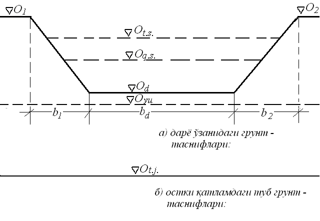
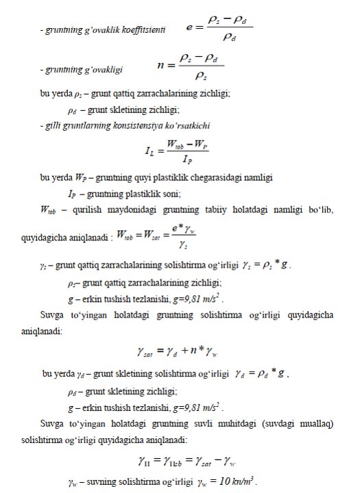
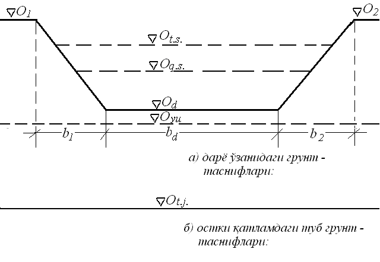
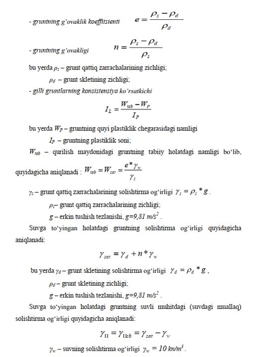

Qurilish maydonining gidrogeologik qirqimini tuzish
Har qanday inshoot loyihasini tuzishda birinchi navbatda loyiha – qidiruv
ishlari olib boriladi, ya‘ni loyihalanayotgan inshoot qurilish maydonining6
geologiyasi, gidrogeologiyasi, iqlimi va boshqa tabiiy sharoitlari to‘g‘risida
ma‘lumotlar to‘planib tahlil qilinadi va ushbu qurilish maydonining sharoitiga mos
keladigan poydevor turi hamda uning konstruksiyasi tanlanadi.

Qurilish maydonining gidrogeologik qirqimini tuzishga doir hisobiy
sxema
Qurilish maydonidagi gruntning fizik ko‘rsatkichlari va suv
xossalarini aniqlash
Har qanday inshoot loyihasini qilishda tabiiy sharoitda qurilish maydonidagi
gruntlarning fizik, mexanik va suv xossalarini tahlil qilish katta ahamiyatga ega.
Gruntlarning fizik holatini baholashda tajribalar yordamida aniqlanadigan asosiy
va hisoblab topiladigan hosilaviy ko‘rsatkichlar ishlatiladi. Qattiq zarrachalarning
zichligi, gruntning tabiiy holatdagi (buzilmagan tuzilishdagi) zichligi va namligi
asosiy fizik ko‘rsatkichlar hisoblanadi. Quruq holatdagi gruntning (grunt
skeletining) zichligi, gruntning g‘ovakligi, g‘ovaklik koeffitsienti, namlanish
darajasi va gruntning suvga to‘la to‘yingan holatdagi zichligi
qo‘shimcha(hosilaviy) fizik ko‘ratkichlarga kiradi. Loyihani bajarish uchun
foydalaniladigan ko‘rsatkichlar quyidagi tartibda hisoblab chiqiladi:

Poydevor uchun material tanlash
Qurilishi rejalashtirilayotgan inshootning tayanch(ustun)lari betondan
loyihalashtirilganligi uchun poydevor materiali sifatida siqilishga chidamliligi
bo‘yicha B10* yoki B20* sinfidagi og‘ir beton qo‘llanilishi lozim. Bu holda
poydevorni shunday loyihalashtirish lozimki, poydevor materialining istalgan
nuqtasida faqatgina siqilishga bo‘lgan zo‘riqish bo‘lishi kerak.
Og‘ir betonning zichligi odatda 2000 ‚ 2400 kg/m3 atrofida bo‘ladi.
Poydevorni loyihalash hisoblarida betonning o‘rtacha zichligini - ρb = 2300 kg/m 3,
solishtirma og‘irligini esa γb=23 kN/m3 qabul qilish mumkin.
Poydevorning minimal joylashish chuqurligini belgilash
Bino va inshootlarning poydevori joylashadigan eng minimal chuqurlikni
belgilashda qurilish maydonining geologik, gidrogeologik va iqlim sharoitlarini
hisobga olish katta ahamiyatga ega. Poydevorning joylashish chuqurligi
bo‘kuvchan gruntlar sharoitida zaminning muzlash chuqurligiga hamda zamin
grunt qatlamining ehtimoli bo‘lgan yuvilish chuqurligiga qarab belgilanadi.
Aksariyat hollarda gidrotexnika inshootlarining poydevorlari daryo o‘zanida
joylashadi, shu sababli ularning zamini sovuq iqlim sharoiti ta‟siridan
himoyalangan bo‘ladi (ya‘ni muzlamaydi).
Poydevor zaminini suv yuvib ketmasligi uchun poydevorni daryo tubidan
pastroqda joylashtirish zarur. Poydevor joylashadigan chuqurlikni quyidagi
formula bo‘yicha hisoblab chiqiladi:
dp =▼Od. t - ▼Oyu + Δh + t
Bu yerda:
Δh-mazkur tayanch atrofidagi gruntning yuvilib ketish chuqurligini
aniqlashda yuz berish ehtimoli bo„lgan xatolik, rejalangan yuvilish chuqurligi
taxminan 0,10-0,20 (o„rta hisobda 0,15) qismiga teng;
▼O d.t – daryo tubining sathi (shartli ravishda);
▼Oyu – daryo tubining ehtimoli bo„lgan yuvilish sathi;
t – daryo tubining ehtimoli bo‘lgan yuvilish qatlami chuqurligi(hyu)ga qarab
qabul qilinadigan zaxira qatlam qalinligi bo‘lib, agar hyu < 1,5metr bo‘lsa, t=2,0 metr, agar
hyu≥1,5metr bo‘lsa, t=2,5 metr qabul qilinadi. Daryo tubining ehtimoli bo‘lgan yuvilish
qatlami chuqurligi quyidagicha aniqlanadi: hyu=▼Odt - ▼Oyu Shunday qilib, zaminning
yuvilib ketmaslik shartiga muvofiq, poydevorning minimal joylashish chuqurligi quyidagi
formula yordamida hisoblanadi: dp=1.15(▼Odt - ▼Oyu)+ t

Qurilish maydonidagi gruntning fizik ko‘rsatkichlari va suv xossalarini aniqlash
Har qanday inshoot loyihasini qilishda tabiiy sharoitda qurilish maydonidagi gruntlarning fizik, mexanik va suv xossalarini tahlil qilish katta ahamiyatga ega. Gruntlarning fizik holatini baholashda tajribalar yordamida aniqlanadigan asosiy va hisoblab topiladigan hosilaviy ko‘rsatkichlar ishlatiladi. Qattiq zarrachalarning zichligi, gruntning tabiiy holatdagi (buzilmagan tuzilishdagi) zichligi va namligi asosiy fizik ko‘rsatkichlar hisoblanadi. Quruq holatdagi gruntning (grunt skeletining) zichligi, gruntning g‘ovakligi, g‘ovaklik koeffitsienti, namlanish darajasi va gruntning suvga to‘la to‘yingan holatdagi zichligi qo‘shimcha(hosilaviy) fizik ko‘ratkichlarga kiradi. Loyihani bajarish uchun foydalaniladigan ko‘rsatkichlar quyidagi tartibda hisoblab chiqiladi:
